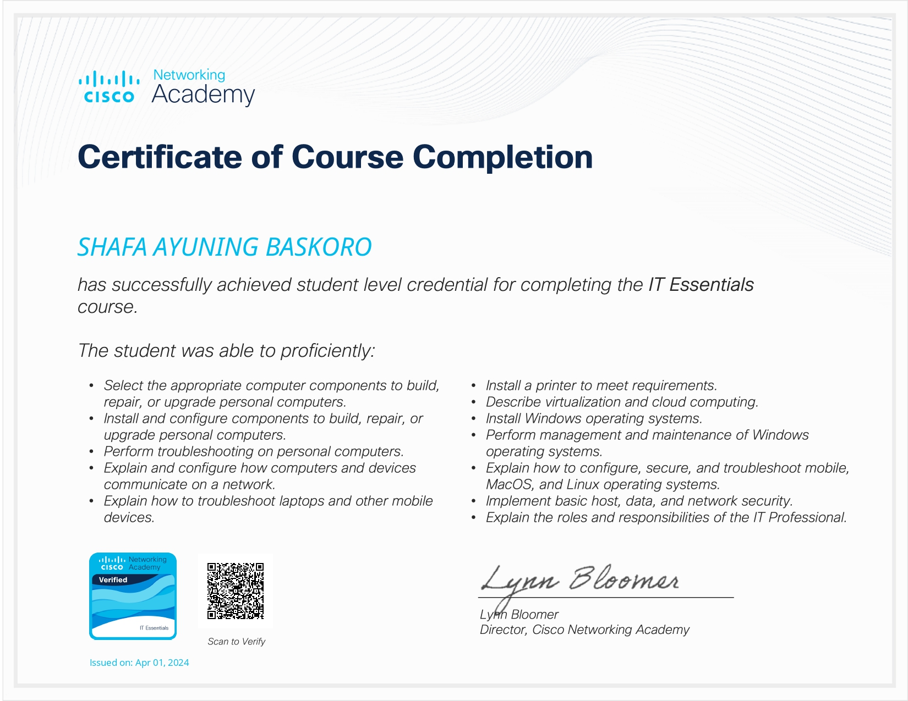

Certification

IT Essentials
Online Course Progate
Apr, 2024

AWS Cloud Foundation
AWS Academy
Dec, 2024

AWS Cloud Architecting
AWS Academy
Dec, 2024
Phone: (+62) 857-9117-6331
Email: shafa.ayuning@gmail.com
Address: Perum Bululawang Permai E10, Kab.Malang (65171)
I am an Informatics Engineering student at Universitas Negeri Malang with a strong focus on front-end web development. I have built a solid foundation in HTML, CSS, and JavaScript, and am experienced in using Git and GitHub for collaborative projects. Passionate about learning emerging technologies, I aim to create innovative digital solutions
August 2025 - Dec 2025
Malang, East Java
Feb 2025 - Present
Malang, East Java
HTML & CSS | Standard, 3 Years
PHP | Beginner, 1 Year
Python | Standard, 3 Years
SQL / MS.SQL | Standard, 3 Years
Laravel | Standard, 2 Years
jQuery | Beginner, 1 Year
Bootstrap | Standard, 2 Years
ReactJS | Beginner, 1 Year
Online Course Progate
Apr, 2024
AWS Academy
Dec, 2024
AWS Academy
Dec, 2024
Front-end
| Description | I served as the front-end developer in the development of a website for a cleaning service provider, which won 3rd place (Bronze Medal) at the Tech and Trade Expo 2024. The project involved creating a responsive and interactive website using HTML, CSS, JavaScript, and Bootstrap. |
|---|---|
| Responsibilities |
|
DevOps
| Description | Built a reliable and scalable cloud infrastructure for Rocket.Chat using AWS services. Served as a DevOps engineer responsible for designing, deploying, and maintaining the operational environment to support real-time communication needs. |
|---|---|
| Responsibilities |
|
Full Stack
| Description | Developed a website platform to support campus entrepreneurship, utilizing Laravel, PHP, CSS, and JavaScript. Contributed as a Full-Stack Developer, responsible for building and maintaining the system's frontend and backend components to enhance digital business accessibility for students. |
|---|---|
| Responsibilities |
|
Full Stack
| Description | Developed an e-learning website that provides modules and educational videos for high school students, using Laravel, PHP, CSS, and JavaScript. Served as a Full-Stack Developer, focusing on both the frontend and backend to deliver a functional and user-friendly learning platform. |
|---|---|
| Responsibilities |
|
Front-end Developer
| Description | Developed a web-based signature application for hospital use, allowing patients to digitally sign prescriptions online. The system integrates with hospital APIs to retrieve patient and prescription data in real-time. Served as a Front-End Developer, responsible for designing an intuitive and responsive interface optimized for both desktop and mobile use. |
|---|---|
| Responsibilities |
|